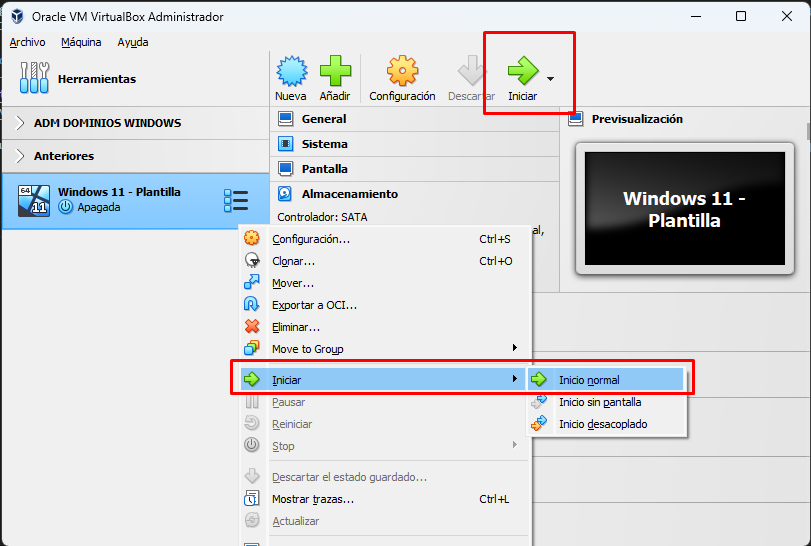

1. Virtualbox
1.1 ¿Dónde se almacenan las máquinas? Cambiando la ruta
El primer paso después de instalar Virtualbox es elegir donde quieres que se almacenen las máquinas virtuales.
Note
La ruta por defecto donde se almacenan las máquinas es en: CARPETA_USUARIO/Virtualbox VMs.
- Windows: C:/Usuarios/mnceleiro/Virtualbox VMs (para mi usuario mnceleiro)
- GNU/Linux: /home/mnceleiro/Virtualbox VMs (para mi usuario mnceleiro)
En mi caso, tengo un segundo disco duro de 2 TB, por lo que elijo este como sitio para almacenar todas las máquinas.
 |
 |
|---|---|
| Paso I: archivo → preferencias | Paso II: seleccionamos la carpeta que queramos |
Si no dispones de un disco principal (C: en Windows) enorme, es mejor que o pongas en un disco o partición secundaria. Eso sí, ten en cuenta que en un SSD las máquinas irán mejor que si están en un HDD. Otra cosa que se puede hacer es poner la ruta de las máquinas en el HDD (más grande) y luego, individualmente al crear las máquinas, poner en el SSD alguna que uses con mucha frecuencia.
1.2 Creando mi primera máquina virtual
1.2.1 Descarga de ISOs
Vamos a usar como ejemplo los sistemas operativos Windows 11 y Ubuntu 22.04.
1.2.1.1 Windows 11
Puedes descargar la ISO de W11 en la página oficial de Microsoft.

Note
Recuerda elegir el idioma
1.2.1.2 Ubuntu 22.04
Descarga Ubuntu 22.04 (hay versiones más modernas, pero esta es la última que ha salido de soporte de larga duración a día de hoy). Para descargar la ISO lo hacemos desde su página oficial (pulsa aquí).
1.2.2 Creación de máquinas
| 1. Pulsamos en el botón "Nueva" (o máquina → Nueva) |
|---|
| 2. Elegimos sistema operativo y nombre de la máquina (para máquina con Windows 11) |
|---|
 |
| Ejemplo para Windows 11 |
| 2. Elegimos sistema operativo y nombre de la máquina (para máquina Ubuntu) |
|---|
| Ejemplo para Ubuntu 22.04 |
En este caso, he elegido en el desplegable Windows 11 como sistema y en el nombre he puesto Windows 11 - Plantilla. Puedes elegir una imagen .ISO de Windows 11 en este mismo paso o hacerlo después manualmente.
Instalación desatendida (unattended installation)
Marca la casilla de "saltarse la instalación desatendida". La instalación desatendida de Virtualbox es bastante nueva y en la mayoría de sistemas no funciona aún como debe.
| 3. Asignamos recursos a la máquina (RAM y procesadores) |
|---|
 |
| Asigna según los recursos de los que dispongas |
Ten en cuenta que Windows 11 tiene como requisitos mínimos 4 GB de RAM. Ubuntu 22.04 tiene 4 GB de RAM como requisitos "recomendados".
- Si tienes un ordenador con más de 8 GB de RAM y más de 2 procesadores no tendrás problema.
- En caso de tener un ordenador con solo 2 procesadores (dual-core) asígnale a la máquina solo 1. Si tienes más puedes ponerle 2 (no te preocupes, esto puede cambiarse más adelante sin ningún tipo de problema)
- Mi consejo si dispones de 8GB de RAM o menos es que lo hagas con una ISO de W10 en lugar de Windows 11 y le pongas solo 2 GB.
| 4. Asignamos tamaño del disco duro |
|---|
| No asignes menos de 64 GB si conectas W11 a internet |
El disco duro no es más que un archivo normal con extensión .vdi. Cualquier cosa que hagas en Virtualbox solo usará ese archivo. Hagas lo que hagas ahí, tu sistema operativo base no corre peligro!
A nivel de disco, puedes encontrar diversas recomendaciones diferentes. Si tienes espacio suficiente, mi consejo es que uses unos 40 GB en Ubuntu y unos 70-80 en Windows. Si en Windows te aseguras de desactivar las actualizaciones inmediatamente o no conectas la máquina a internet seguramente puedas reducir este tamaño consierablemente (quizás hasta unos 35-40 GB si lo necesitas).
Note
El checkbox de "Pre-allocate Full Size" (si se marca) hace que el espacio que indicamos se ocupe inmediatamente.
Si, en cambio, no marcamos esta casilla, el espacio se va ocupando según va creciendo el tamaño de la propia máquina. Es decir, el tamaño que ponemos es el máximo que la máquina puede alcanzar.
Por ejemplo: si tenemos un Windows 11 al que le hemos puesto 80 GB y la casilla no está marcada, si este sistema solo tiene ocupados 40 GB de los 80 que asignamos, en nuestro disco solo ocupará esos 40.
| 5. Revisamos y finalizamos |
|---|
 |
Para arrancar la máquina podemos hacerlo pulsando botón derecho en ella, pulsando "iniciar" en el menú superior o simplemente haciendo doble click sobre ella.
| 6. Arrancar la máquina |
|---|
|  |
| Para arrancar la máquina podemos hacerlo pulsando botón derecho en ella, pulsando "iniciar" en el menú superior o simplemente haciendo doble click sobre ella. |
1.3 Configuración de las máquinas
La mayor parte de las configuraciones de máquinas solo puede cambiarse si estas están apagadas (tenlo en cuenta). Esto es, no puedes ampliarle la RAM a la VM si está encendida.
Para acceder a la configuración:
| Accediendo a la configuración |
|---|
| Se puede acceder con botón derecho sobre la máquina y "configuración" o bien pulsando sobre la máquina con click izquierdo y "configuración" en la parte superior. |
1.3.1 Modificar la cantidad de procesadores y RAM de la máquina
Accedemos a la configuración → Sistema. Podemos modificar las cantidades en las pestañas "Placa base" y "Procesador".
| Cambiando número de procesadores | Cambiando RAM (pestaña placa base) |
1.3.2 Copiar y arrastrar archivos entre host y máquina virtual
Puede habilitarse el arrastrar y soltar y el copy/paste entre el host y la VM (si no se hace serían máquinas independientes y no podrías copiar textos entre una y otra).
| 6. Compartición entre las máquinas de copiar/pegar y arrastrar ficheros |
|---|
 |
| Hay que cambiar ambas opciones de "inhabilitado" a "bidireccional" |
1.3.3 Configuración de red
Por defecto viene una configuración NAT. Con NAT, la máquina host (nuestro ordenador) no puede hacer ping a la máquina virtual (no hay comunicación entre ellas). A veces nos interesa tener distintas alternativas a esto como, por ejemplo, tener dos máquinas en la misma red (adaptador puente) o poner múltiples máquinas sin acceso a internet en la misma red interna (red interna).
| 6. Configuraciones de RED |
|---|
 |
Esta parte es importante. Consulta este enlace para entender bien como funcionan las configuraciones de red en Virtualbox.
1.4 Práctica
En grupos de dos personas realizar una presentación (de la manera que quieras, con diapositivas, solo imágenes, puro texto o incluso sin nada). Lo único obligatorio es hacer demostraciones prácticas de lo que se indica (enseñar carpeta compartida en virtualbox, cambiar procesadores/ram en directo y verlas con comandos, etc.).
1.4.1 Sistemas operativos
- Repaso rápido de la evaluación histórica de los sistemas operativos (consultar apuntes: procesamiento por lotes, monousuario, multiusuario, multipgoramación...)
1.4.2 Instalación de sistemas operativos y virtualización
- Instala un sistema operativo Windows 11.
- Instala un sistema operativo Ubuntu 22.04 LTS en una máquina virtual. Particiona a mano y explica para que sirven las particiones que creas.
- Instala un Windows Server 2022.
- Explica solo 1 de las siguientes:
- Configuración de que el portapapeles se comparta entre host y vm.
- Configuraciones de red, para qué sirven y configurar 2 máquinas para que tengan red entre ellas.
- Carpeta compartida entre una máquina virtual y la máquina host, de manera que si copias algo en tu máquina aparezca en la VM.
- Como exportar una máquina virtual (.ova) y cómo cambiar de directorio una máquina virtual y que virtualbox la reconozca.
- Tipos de hipervisores, diferencias.
1.4.3 Algoritmos de planificación
- Explica con un ejemplo práctico como se hace un algoritmo de planificación (escoge 2):
- FIFO
- SJF
- SRTF
- Round Robin
1.4.4 Sistemas de ficheros
- Explica los sistemas de archivos más comunes y algún pequeño detalle que consideres interesante de cada uno de ellos (mínimo 3).
- ¿Conoces algún sistema de ficheros orientado a compartición de datos a través de la red?
1.4.5 OPCIONALES (para nota)
- Instala Proxmox y, dentro de este, instala una VM Almalinux o CentOS (OPCIONAL, PARA NOTA)